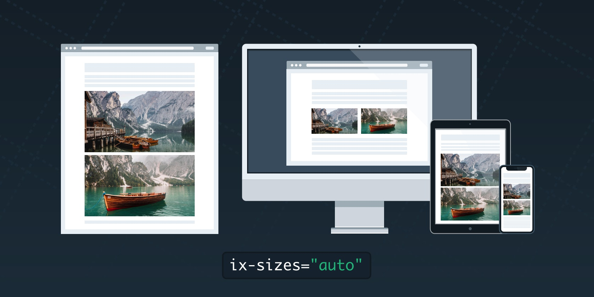

Japanese imgix blog
Home
Category
Archive
Pages
Contact Us
Japanese
imgix blog showcase
Explore
Video Streaming for the Modern Web
Fashion
2 minutes

Automatically Set Images sizes Attribute With imgix.js
Fashion
2 minutes
Optimizing Images for PageSpeed
Fashion
2 minutes
New Watermark Features for Tile and Rotation
Fashion
2 minutes
Admin
January 14,2022
2 Comments